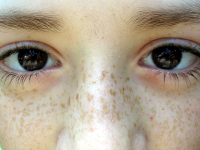
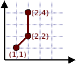

Para efeitos da nota atribuida à resolução de exercícios ao longo do semestre - Submeter até 23:59 de 3 de Janeiro
(o problema continuará depois disponível para submissão, mas sem contar para a nota)
 A pequena Sara adora ligar as sardas nas costas do seu pai para formar figuras. Considera que as costas do pai podem ser pensadas como um plano com as sardas em várias localizações (x,y). A distância entre dois pontos (x1,y1) e (x2,y2) pode ser vista como a raíz quadrada de (x1-x2)2 + (y1-y2)2.
A tua tarefa é dizer à Sara qual a maneira de ligar todas as sardas de modo a minimizar a quantidade de tinta usada. A pequena Sara liga as sardas desenhando linhas rectas entre pares de sardas, possivelmente levantando a caneta entre linhas. Quando a Sara termina, deve existir uma sequência de linhas entre uma sarda e qualquer outra sarda.
A primeira linha contém um único inteiro N, o número de sardas.
Seguem-se N linhas, cada uma com dois inteiros separados por um espaço indicando a posição (x,y) de uma sarda.
Uma única linha com um número indicando a quantidade de tinta que a Sara deve gastar para ligar todas as sardas.
Para ser considerada correcta, a diferença entre número que escreveu e o número correto deve ser inferior ou igual a 0.01 (este problema tem um avaliador especial para verificar se isso acontece). Por exemplo, se a resposta correcta for "1.2345" qualquer uma das seguintes respostas seria aceite: "1.23", "1.24, "1.22", "1.234" ou "1.235" (já "1.3" não seria aceite, pois |1.2345 - 1.3| > 0.01).
São garantidos os seguintes limites em todos os casos de teste que irão ser colocados ao programa:
| 2 ≤ N ≤ 100 | Número de sardas | |
| 0 ≤ x ≤ 1000 | Coordenada horizontal de uma sarsa | |
| 0 ≤ y ≤ 1000 | Coordenada vertical de uma sarsa |
3 1 1 2 2 2 4
3.41421
O exemplo de input corresponde à seguinte imagem (a castanho os traços de tinta que a Sara tem de fazer):

Desenho e Análise de Algoritmos (CC2001)
DCC/FCUP - Faculdade de Ciências da Universidade do Porto